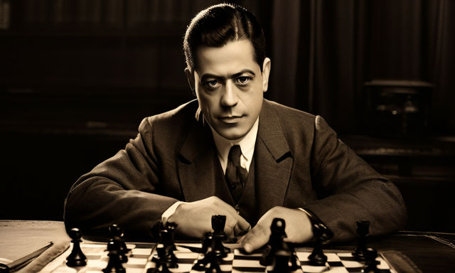
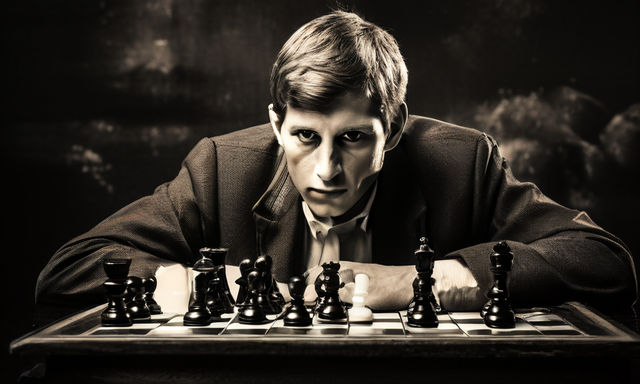
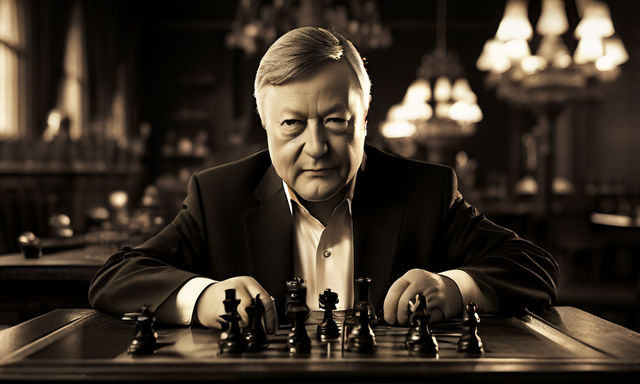
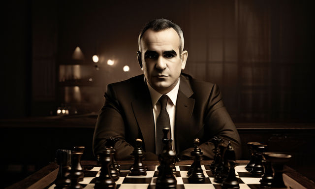
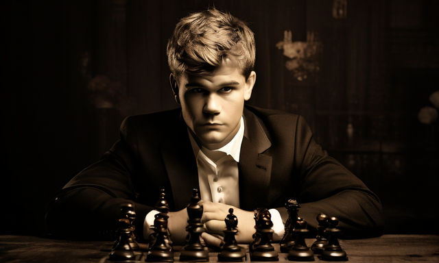

Personajes relevantes en la historia del ajedrez:
-
José Raúl Capablanca: Gran maestro cubano, considerado uno de los mejores jugadores de la historia.
 -
Bobby Fischer: Gran maestro estadounidense, campeón del mundo en 1972.
 -
Anatoly Karpov: Gran maestro soviético, campeón del mundo durante 10 años.
 -
Garry Kasparov: Gran maestro soviético y ruso, campeón del mundo durante 15 años.
 -
Magnus Carlsen: Gran maestro noruego, actual campeón del mundo.
